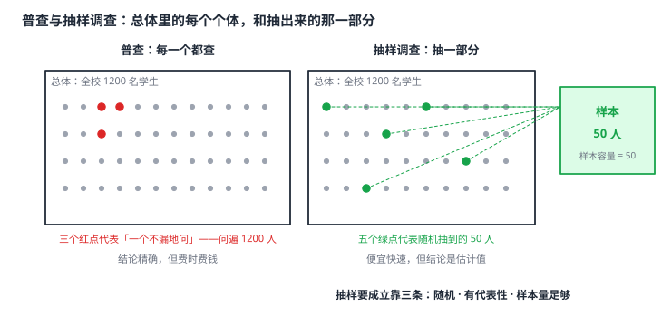

数据的收集
统计调查只有两条路：普查——把每一个都查一遍；抽样调查——从总体里抽一部分来推断全体。普查结论精确但昂贵费时，抽样便宜快速但结论带有估计性质。四个词必须分清：总体是研究对象的全体，个体是总体中的每一个，样本是抽出来的那一部分，样本容量是样本里个体的个数。抽样要站得住，靠三条：随机（每个个体被抽到的机会均等）、有代表性（样本的构成要反映总体）、数量足够（样本太小，偶然性就会盖过规律）。分层抽样按总体内部的比例分层再抽，能同时满足随机与代表性。
| 所属主题 | 统计 |
|---|---|
| 所属模块 | 统计与概率 |
| 课标学段 | 第四学段（7~9 年级） |
| 前置知识 | 平面直角坐标系与函数 |
| 核心素养 | 数据观念应用意识推理能力 |
教材定位
人民教育出版社《人教版（2024版）义务教育教科书·数学》
七年级下册第12章 数据的收集、整理与描述12.1 统计调查
对应七下 12.1 统计调查（12.1.1 全面调查 / 12.1.2 抽样调查）：普查与抽样、总体、个体、样本、样本容量。
说明
两种基本方式。普查：对调查对象中的每一个都进行调查。结论精确、没有抽样误差，但代价大——人口普查要动用大量人力、耗时数年；很多问题（如灯泡寿命）根本无法普查，因为试验具有破坏性。抽样调查：从调查对象中抽取一部分进行考察，用这部分的结果推断全体。成本低、速度快，是实际中最常用的方式，代价是结论带有估计性质。
四个词必须分清。总体：要考察的对象的全体；个体：总体中的每一个考察对象；样本：从总体中抽出的那一部分；样本容量：样本中个体的个数。这四个词是配套的——「从 1200 名学生中抽出 60 名调查视力」这句话里，总体是这 1200 名学生的视力情况，个体是其中一名学生的视力情况，样本是抽出的 60 名学生的视力情况，样本容量是 60。注意样本容量是样本里个体的个数，不是抽样比例——「抽取了 1/20」说的是比例，「样本容量 60」说的是个数。
抽样调查要站得住，靠三条要求。随机性：总体中每个个体被抽到的机会均等——用抽签或随机数法，而不是「挑看着顺眼的」。代表性：抽出的样本在各个方面的构成要接近总体，比如调查全校学生的视力，样本里男生女生、各年级、各住宿生的比例都要与全校大体一致。样本量足够大：样本太小，偶然因素就会盖过真实规律；样本越大，估计通常越可靠，但成本也越高。
常用方法有两种。简单随机抽样（抽签法、随机数法）：把总体编号，用随机方法决定抽哪些编号，每个个体机会均等。分层抽样：先把总体按某个特征分成若干层，再按各层的比例分别抽取。分层的好处是既保证随机，又让样本的构成贴近总体——比如全校按年级分层，各年级抽相同比例，抽出的样本里各年级的比重就和全校一致。
选哪种方式，看三个问题：能不能普查？普查的代价能不能承受？结论要多精确？答案是「破坏性试验」「数量巨大」「时效要求紧」时用抽样；对象很少、个个都重要、要求结论绝对准确时才用普查。
使用场景
产品质量抽检：从一批灯泡中随机抽 20 只做寿命试验，用这 20 只的结果推断整批灯泡的质量——试验有破坏性，不能全试。
民情民意调查：就校园内交通方式、课外阅读时间等话题在全校学生中做抽样调查，用样本的倾向推断全校的想法，同时保证每个学生都有同等的发言机会。
注意点
抽样必须随机。「只挑成绩好的学生做学习习惯调查」「只问愿意配合的同学」都是方便抽样，结论会系统性偏向一边，不是随机抽样。选样时要说清用什么随机方法、怎么编号、怎么抽，而不是「随便找一些人」。
样本要有代表性，不能只靠样本量大。抽 500 个样本但全是男生，和抽 50 个男女比例正确的样本相比，后者对全校的代表性反而更强。随机性与代表性要同时满足，不能拿一条换另一条。
样本容量与抽样比例别混。「抽取了 1/20 的学生」是比例，「样本容量是 60」是个数；算题时先问自己要求的是哪一个。
分层抽样按比例抽，不是平均分。各层的个数若不按比例抽，样本的代表性就破坏了——比例大的层抽得少，结论会偏向比例小的层。
证明

图 1：普查与抽样调查的分工——总体里的每个个体是调查对象，抽出来的那部分是样本，样本容量就是样本中个体的个数
证明
结论 1样本中某特征的比例 m/n，会随着样本容量 n 增大而接近总体中该特征的比例 p。
设总体中某个特征的比例是 p，抽到容量为 n 的随机样本，其中具有该特征的个体个数为 m，则样本中该特征的比例是 m/n。随机性保证这 m 个个体不是被挑着选的，而是随机落进来的；n 越大，m/n 越接近 p。这就是「大数定律」的直观版本，也是「样本容量足够大」这条要求的来由。
关键一步这一步成立靠两个条件：一是随机性——总体中每个个体被抽到的机会均等，抽出的 m 个是随机落进来的、不是被挑着选的，样本比例才不会系统性地偏向某一边；二是样本量足够大——n 越大，抽样本身的偶然波动相对越小，m/n 才越贴近 p。这两条合起来就是「大数定律」的直观版本，也是「样本容量足够大」这条要求的来由。
结论 2分层抽样按各层在总体中的比例抽取，既能保证样本结构与总体结构一致（代表性），又不破坏层内的随机性。
把总体按特征分成 k 层，各层个数分别为 N_1,N_2,\ldots,N_k（总和为 N）。按比例抽 n 个，则第 i 层抽 \dfracn\cdot N_iN 个——各层在样本中的比重 \dfracn\cdot N_i/Nn=\dfracN_iN 与总体中的比重完全相同，样本结构因此与总体结构一致；而每层内部仍用随机方法抽取，随机性不被破坏。这是分层抽样同时满足两条要求的数学理由。
关键一步代表性靠的是「按比例抽」这一条：第 i 层抽 \dfracn\cdot N_iN 个，样本中该层的比重 \dfracn\cdot N_i/Nn=\dfracN_iN 与总体中该层的比重完全相同，所以样本结构与总体结构一致。随机性靠的是「每层内部仍用随机方法抽取」——分层只决定各层各抽多少，并不指定抽哪几个，所以随机性不被破坏。两条要求各由一个机制承担，这就是分层抽样同时满足两条要求的数学理由。
结论 3普查的结论比抽样更可靠：普查没有抽样误差，得到的统计量就是总体本身的统计量。
普查没有抽样误差——每个个体都被调查，得到的统计量就是总体本身的统计量，不存在「样本能否代表总体」的问题。但普查的代价随总体规模迅速上升：总体是 N 个个体时，普查要做 N 次调查，抽样调查只做 n 次（通常 n 远小于 N）。所以精度与成本的权衡，就是普查与抽样的分工线。
关键一步关键在于普查是「一个不漏」：每个个体都被调查，因此算出的统计量就是总体本身的统计量，根本不存在「样本能否代表总体」这一步，也就没有抽样误差可言。但代价随总体规模迅速上升：总体是 N 个个体时，普查要做 N 次调查，抽样调查只做 n 次（通常 n 远小于 N）。精度与成本的权衡，就是普查与抽样的分工线。
结论 4凡是「测一次就改变被测对象」的破坏性试验，普查在原理上就不可能实现，只能用抽样调查加统计推断。
灯泡寿命试验做完，灯泡就烧坏了；血型检验抽一管血就够了，要普查就得给每个人都抽一管。这类「测一次就改变被测对象」的试验，测一个就损失一个，普查在原理上就不可能实现，只能用小样本加统计推断。
关键一步判据是试验本身会不会消耗掉被调查对象：灯泡寿命试验做完，灯泡就烧坏了；血型检验抽一管血就够了，要普查就得给每个人都抽一管。这类试验测一个就损失一个，普查的代价不是「高」而是「根本做不到」，所以只能用小样本加统计推断。
动手实验
从班级花名册上做一个最小规模的抽样实验。先把 50 个同学按学号编号写在纸条上折起来，用抽签法随机抽 10 个，记录他们的身高，算出这 10 人的平均身高；再重复抽 10 次（每次重新折好打乱），算出 10 次平均身高的平均值。你会发现单次抽样的平均身高在小范围内上下跳动，而 10 次的平均值稳定得多——这正是「样本量大则估计稳」的体感版。接着故意用「只抽学号前 10 位」代替随机抽，再算一次平均身高，这个值会明显偏离，说明系统性偏差不是靠样本量能弥补的。
解题思路
判断用普查还是抽样三问：① 这个调查对被调查对象有破坏性吗？② 总体规模大到普查不现实（人数过万、耗时过长）吗？③ 结论要求绝对精确吗？三个都是「否」才考虑普查。
写抽样方案四步：① 说明总体（研究对象是谁，边界要清楚）；② 选抽样方法（数量不大用抽签法，要保结构用分层抽样）；③ 写清随机过程（怎么编号、用什么随机方法、抽多少）；④ 说明样本量与代表性依据。
分层抽样计算三步：① 先算出各层在总体中的个数；② 算出抽样比例 n/N；③ 各层个数 × 抽样比例 = 该层抽取数，最后验算各层抽取数之和等于 n。
按场景的例题
例 1（场景：数据调查） 视力调查中的总体与样本
某校共有 1200 名学生，现要抽取 60 名学生调查视力情况。请指出这次调查的总体、个体、样本与样本容量，并求出抽样比例。
解：调查对象是全校学生的视力情况，因此总体是这 1200 名学生的视力情况；个体是其中任意一名学生的视力情况；样本是抽出的 60 名学生的视力情况；样本容量是 60。抽样比例 =60/1200=1/20=5%。注意 60 是样本容量（个数），1/20 才是抽样比例（比值），两者不要混。
答：总体为 1200 名学生的视力情况，个体为其中一名学生的视力情况，样本为抽出的 60 名学生的视力情况，样本容量 60，抽样比例 1/20=5%。
例 2（场景：方案选择） 灯泡寿命试验为何只能抽样
某厂生产了一批灯泡，要了解这批灯泡的平均寿命。厂里提出两个方案：甲方案是把全部灯泡接入测试台逐个测试；乙方案是随机抽取 20 只测试。请说明两个方案的可行性，并指出用乙方案时应注意什么。
解：甲方案不可行：寿命测试具有破坏性——灯泡测试完就报废，逐个测试等于把整批产品全部毁掉，代价超过产品本身的价值。乙方案可行：随机抽 20 只测试，用这 20 只的结果推断整批的平均寿命。用乙方案要注意三点：一是抽样必须随机（把灯泡编号后用随机方法抽，不能专挑某一编号段）；二是样本要有代表性，抽样比例不能太小、20 只太少时结论偶然性大，适当加大样本量更稳妥；三是结论是估计值而非精确值，汇报时要说清是抽样估计结果。
答：甲方案不可行（试验有破坏性），乙方案可行；乙方案需保证随机性、代表性与足够的样本量，结论为抽样估计值。
例 3（场景：生活优化） 社区住户调查的分层抽样
某社区有住户 500 户，其中住高层 200 户、住中层 250 户、住低层 50 户。现用分层抽样抽取 50 户调查满意度，问三层各抽多少户。
解：先算抽样比例：50/500=1/10。再按各层在总体中的比例分别抽：高层 200×1/10=20 户，中层 250×1/10=25 户，低层 50×1/10=5 户。验算：20+25+5=50，与样本容量相符 ✓。这样抽出的样本里，三层的构成与全社区完全一致（高层占 40%、中层 50%、低层 10%），代表性有保证。
答：高层抽 20 户，中层抽 25 户，低层抽 5 户。
常用推论
抽样调查的本质是「用局部信息换全局判断」，和代数里「用样本点估计整体参数」是同一个思路。它的可信度不来自样本数量本身，而来自随机性保证没有系统性偏差、代表性保证结构不偏、样本量保证偶然波动被压住这三条——缺任何一条，样本再大也没用。
「普查更准」这句话只在结论的绝对意义上成立，实践中还要算另一笔账：普查的边际成本随总体规模线性增长，精度却未必比大样本抽样高多少（统计上样本量到一定程度后精度提升迅速变缓）。在精度与成本的权衡上，抽样几乎总是更优的选择，除非对象数量很少或结论必须逐个精确。
随机抽样的公平性还有一层社会意义：它让总体中的每一个个体都有同等的被抽中机会，这本身就是一种对待。在调查学习习惯、满意度这类题目时，抽样方式的选择比样本量更能决定结论是否可信。
易错点
错「为了了解全校学生的课外阅读时间，随机抽取 100 名学生调查，再抽 100 名重复一次，两次结果接近就说明结论可靠了。」
为什么错重复抽样只能减小偶然波动，不能纠正抽样方法本身的偏差。若两次抽到的学生都集中在同一批（比如都是同一个班的），系统性地偏向一个年级，重复多少次都不会可靠。这段话还漏了抽样方法是否随机的说明。
正确先保证抽样方法随机且样本有代表性（各年级、各性别比例与全校一致），再靠加大样本量减小偶然波动；两者不可互相替代。
错「从 1200 名学生中抽取了 1/20，所以样本容量是 1/20。」
为什么错把比例当成了个数。1/20 是抽样比例，样本容量必须是一个具体的个数——由 1200×1/20=60 算出，是 60。
正确样本容量是样本中个体的个数，本题是 60；抽样比例 1/20=5% 是另一回事。
错「调查全校学生的睡眠时间，调查者直接走向宿舍楼，随机询问遇到的 30 名学生。」
为什么错这不是随机抽样——「遇到的」由调查者所在位置决定，住得近的学生被抽到的机会远大于住得远的，系统性偏向某一区域。随机性必须由编号加随机方法保证。
正确把全校学生编号，用随机数或抽签法确定被访者；被抽中的学生再由调查者上门或去宿舍，确保每个人机会均等。
直观理解
抽样的道理和「用一小块蛋糕判断整个蛋糕的味道」很像——前提是这一小块必须是被公平切下来的，而不是你顺手挑的。整个统计学科的立足点就在这里：总体是全部，样本是抽出来的那一块，而「怎么抽」决定了结论靠不靠谱。现实中大部分判断都建立在抽样之上：体检抽一管血、质检抽一只灯泡、民调访几百个人。学会说清楚「我的样本是怎么来的、容量多少、代表谁」，比会算任何一道统计题都重要——它决定了你的结论能不能被人相信。